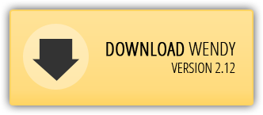

Wendy

synthesizing partners for services
Wendy is a tool to synthesize partners for services. This includes a finite characterization of all partners (called "operating guidelines"). Wendy uses a vast set of reduction rules to synthesize (small) partners. These rules may, however, not preserve all partners of the service under consideration, but will synthesize a partner if one exists.
 |  |
| Correct partners | Whatever cool feature | This one's also a great one | ||
| Each synthesized partner is correct by construction. | Yeah, this is really great. You actually have to try it. | If you did not consider Wendy before, this is the killer argument. |